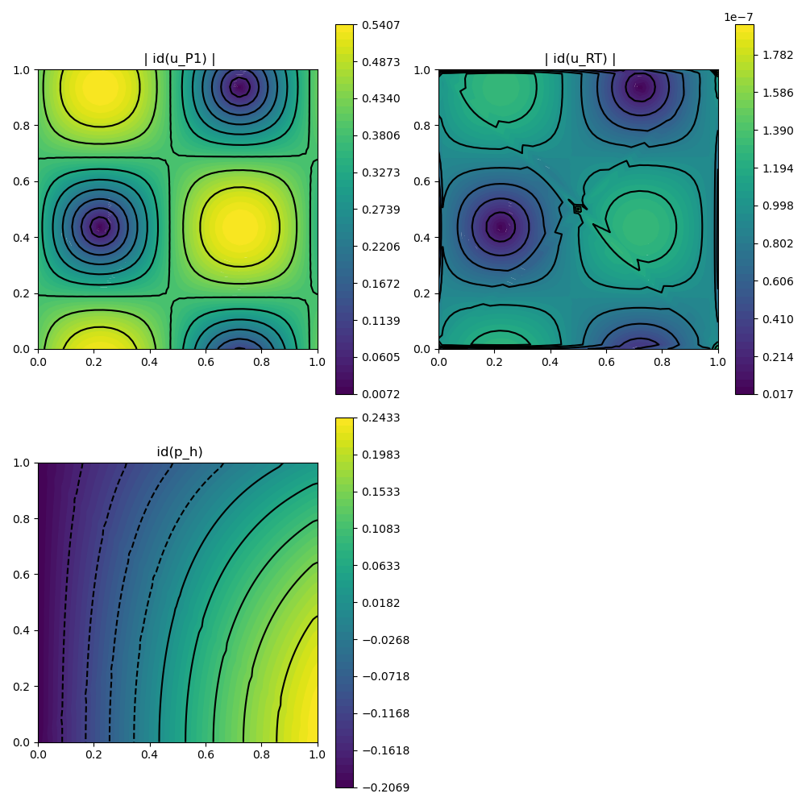
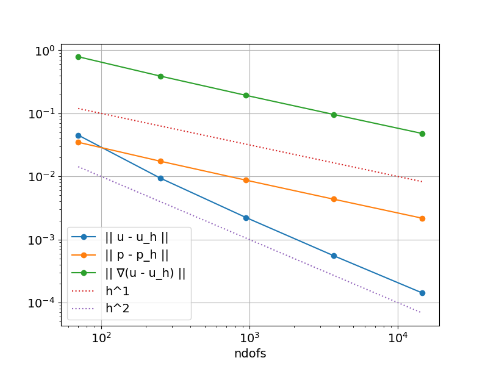

231 : Stokes $(P1 \oplus RT0) \times P0$
This example computes the velocity $\mathbf{u}$ and pressure $\mathbf{p}$ of the incompressible Navier–Stokes problem
\[\begin{aligned} - \mu \Delta \mathbf{u} + \nabla p & = \mathbf{f}\\ \mathrm{div}(u) & = 0 \end{aligned}\]
with exterior force $\mathbf{f}$ and some parameter $\mu$ and inhomogeneous Dirichlet boundary data.
The problem will be solved by a $(P1 \oplus RT0) \times P0$ scheme suggested by Li/Rui,arXiv:2012.01689 [math.NA]. The velocity space employs continuous P1 functions plus additional (only H(div)-conforming) RT0 functions and a P0 pressure space leading to an exactly divergence-free discrete velocity.
module Example231_StokesHdivP1RT
using GradientRobustMultiPhysics
using ExtendableGrids
# flow data for boundary condition, right-hand side and error calculation
function get_flowdata(μ)
p! = (result,x,t) -> (result[1] = cos(t)*(sin(x[1])*cos(x[2]) + (cos(1) -1)*sin(1)))
u! = (result,x,t) -> (
result[1] = cos(t)*(sin(π*x[1]-0.7)*sin(π*x[2]+0.2));
result[2] = cos(t)*(cos(π*x[1]-0.7)*cos(π*x[2]+0.2)))
∇u! = (result,x,t) -> (
result[1] = π*cos(t)*(cos(π*x[1]-0.7)*sin(π*x[2]+0.2));
result[2] = π*cos(t)*(sin(π*x[1]-0.7)*cos(π*x[2]+0.2));
result[3] = -result[2];
result[4] = -result[1])
f! = (result,x,t) -> (## f= -μΔu + ∇p
result[1] = 2*π*π*μ*cos(t)*(sin(π*x[1]-0.7)*sin(π*x[2]+0.2)) + cos(t)*cos(x[1])*cos(x[2]);
result[2] = 2*π*π*μ*cos(t)*(cos(π*x[1]-0.7)*cos(π*x[2]+0.2)) - cos(t)*sin(x[1])*sin(x[2]);)
u = DataFunction(u!, [2,2]; dependencies = "XT", name = "u", quadorder = 5)
p = DataFunction(p!, [1,2]; dependencies = "XT", name = "p", quadorder = 4)
∇u = DataFunction(∇u!, [4,2]; dependencies = "XT", name = "∇u", quadorder = 4)
f = DataFunction(f!, [2,2]; dependencies = "XT", name = "f", quadorder = 5)
return u, p, ∇u, f
end
# everything is wrapped in a main function
function main(; μ = 1e-3, nlevels = 5, Plotter = nothing, verbosity = 0, T = 1, α = 2.0)
# set log level
set_verbosity(verbosity)
# FEType
FETypes = [H1P1{2}, HDIVRT0{2}, H1P0{1}]
# initial grid
xgrid = grid_unitsquare(Triangle2D)
# get exact flow data (see above)
u,p,∇u,f = get_flowdata(μ)
# define problem
Problem = PDEDescription("Stokes problem")
add_unknown!(Problem; equation_name = "momentum equation (P1 part)", unknown_name = "u_P1")
add_unknown!(Problem; equation_name = "momentum equation (RT0 part)", unknown_name = "u_RT")
add_unknown!(Problem; equation_name = "incompressibility constraint", unknown_name = "p")
# add Laplacian for both velocity blocks
add_operator!(Problem, [1,1], LaplaceOperator(μ))
# add stabilising term for RT0 block (lumped diagonal div-div matrix)
add_operator!(Problem, [2,2], AbstractBilinearForm([Divergence, Divergence]; name = "α (div u_RT,div v_RT) [lumped]", factor = α, APT = APT_LumpedBilinearForm))
# add Lagrange multiplier for divergence of velocity
add_operator!(Problem, [1,3], LagrangeMultiplier(Divergence))
add_operator!(Problem, [2,3], LagrangeMultiplier(Divergence))
add_constraint!(Problem, FixedIntegralMean(3,0))
# add boundary data and right-hand side
add_boundarydata!(Problem, 1, [1,2,3,4], BestapproxDirichletBoundary; data = u)
add_boundarydata!(Problem, 2, [1,2,3,4], HomogeneousDirichletBoundary)
add_rhsdata!(Problem, 1, RhsOperator(Identity, [1], f))
add_rhsdata!(Problem, 2, RhsOperator(Identity, [1], f))
# show final problem description
@show Problem
# prepare error calculation
L2VelocityErrorEvaluator = L2ErrorIntegrator(Float64, u, [Identity, Identity]; time = T)
L2PressureErrorEvaluator = L2ErrorIntegrator(Float64, p, Identity; time = T)
H1VelocityErrorEvaluator = L2ErrorIntegrator(Float64, ∇u, Gradient; time = T)
L2VeloDivEvaluator = L2NormIntegrator(Float64,1 , [Divergence, Divergence])
Results = zeros(Float64,nlevels,4); NDofs = zeros(Int,nlevels)
# loop over levels
for level = 1 : nlevels
# refine grid and update grid component references
xgrid = uniform_refine(xgrid)
# generate FES spaces and solution vector
FES = [FESpace{FETypes[1]}(xgrid), FESpace{FETypes[2]}(xgrid), FESpace{FETypes[3]}(xgrid)]
Solution = FEVector{Float64}(["u_P1", "u_RT", "p_h"],FES)
# solve
solve!(Solution, Problem; time = T)
# plot
GradientRobustMultiPhysics.plot(xgrid, [Solution[1], Solution[2], Solution[3]], [Identity, Identity, Identity]; Plotter = Plotter)
# compute L2 and H1 errors and save data
NDofs[level] = length(Solution.entries)
Results[level,1] = sqrt(evaluate(L2VelocityErrorEvaluator,[Solution[1],Solution[2]]))
Results[level,2] = sqrt(evaluate(L2PressureErrorEvaluator,Solution[3]))
Results[level,3] = sqrt(evaluate(H1VelocityErrorEvaluator,Solution[1]))
Results[level,4] = sqrt(evaluate(L2VeloDivEvaluator,[Solution[1], Solution[2]]))
end
# print/show convergence history
print_convergencehistory(NDofs, Results; X_to_h = X -> X.^(-1/2), ylabels = ["|| u - u_h ||", "|| p - p_h ||", "|| ∇(u - u_P1) ||", "|| div(u_h) ||"])
plot_convergencehistory(NDofs, Results[:,1:3]; add_h_powers = [1,2], X_to_h = X -> X.^(-1/2), Plotter = Plotter, ylabels = ["|| u - u_h ||", "|| p - p_h ||", "|| ∇(u - u_h) ||"])
end
endThis page was generated using Literate.jl.
Default output:
julia> Example231_StokesHdivP1RT.main()
PDE-DESCRIPTION
===============
system name = Stokes problem
id | unknown name / equation name
[1] | u_P1 / momentum equation (P1 part)
[2] | u_RT / momentum equation (RT0 part)
[3] | p / incompressibility constraint
LHS block | PDEOperator(s)
[1,1] | 0.001 (∇u,∇v) (APT = SymmetricBilinearForm, AT = ON_CELLS, regions = [0])
[1,2] | none
[1,3] | (div(v),q) (APT = BilinearForm, AT = ON_CELLS, regions = [0])
[2,1] | none
[2,2] | α (div u_RT,div v_RT) [lumped] (APT = LumpedBilinearForm, AT = ON_CELLS, regions = [0])
[2,3] | (div(v),q) (APT = BilinearForm, AT = ON_CELLS, regions = [0])
[3,1] | none
[3,2] | none
[3,3] | none
RHS block | PDEOperator(s)
[1] | (f, id(v)) (APT = LinearForm, AT = ON_CELLS, regions = [1])
[2] | (f, id(v)) (APT = LinearForm, AT = ON_CELLS, regions = [1])
[3] | none
BoundaryOperator[1] : BestapproxDirichletBoundary -> [1, 2, 3, 4]
BoundaryOperator[2] : HomogeneousDirichletBoundary -> [1, 2, 3, 4]
BoundaryOperator[3] :
GlobalConstraints[1] : Mean[3] != 0
Problem =
ndofs | || u - u_h || order | || p - p_h || order | || ∇(u - u_P1) || order | || div(u_h) || order |
============|=============================|=============================|=============================|=============================|
70 | 4.52039e-02 0.000 | 3.48542e-02 0.000 | 7.89870e-01 0.000 | 1.22643e-16 0.000 |
250 | 9.42941e-03 2.463 | 1.74735e-02 1.085 | 3.90158e-01 1.108 | 2.16062e-16 -0.890 |
946 | 2.23973e-03 2.160 | 8.74218e-03 1.041 | 1.93064e-01 1.057 | 5.17224e-16 -1.312 |
3682 | 5.61233e-04 2.037 | 4.37163e-03 1.020 | 9.62761e-02 1.024 | 1.41454e-15 -1.481 |
14530 | 1.45636e-04 1.965 | 2.18585e-03 1.010 | 4.81117e-02 1.011 | 2.35181e-15 -0.741 | 